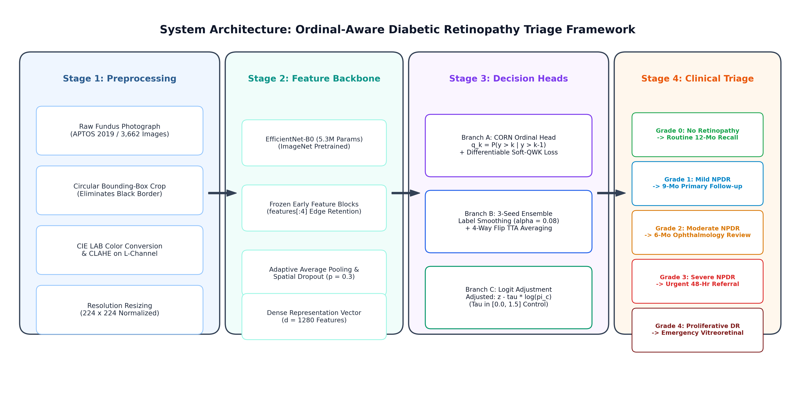
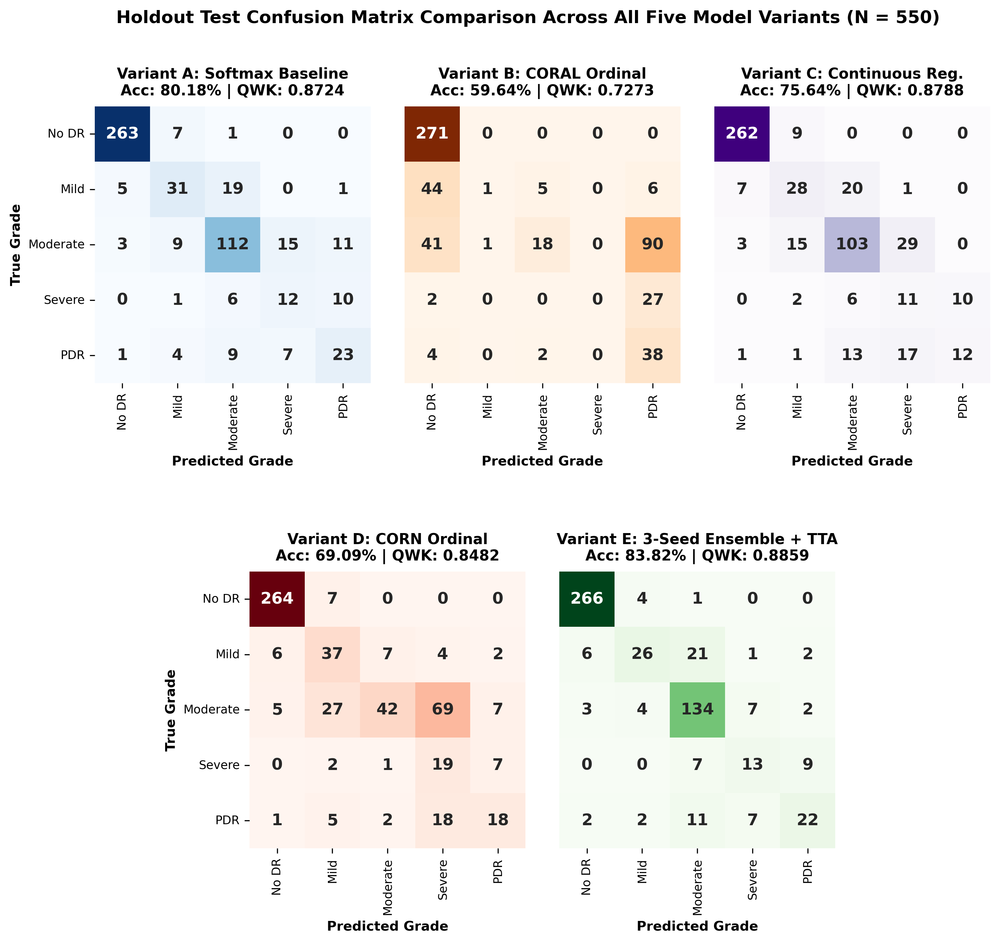
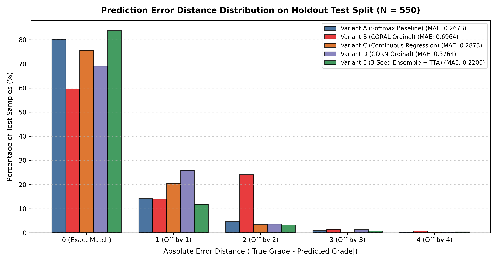
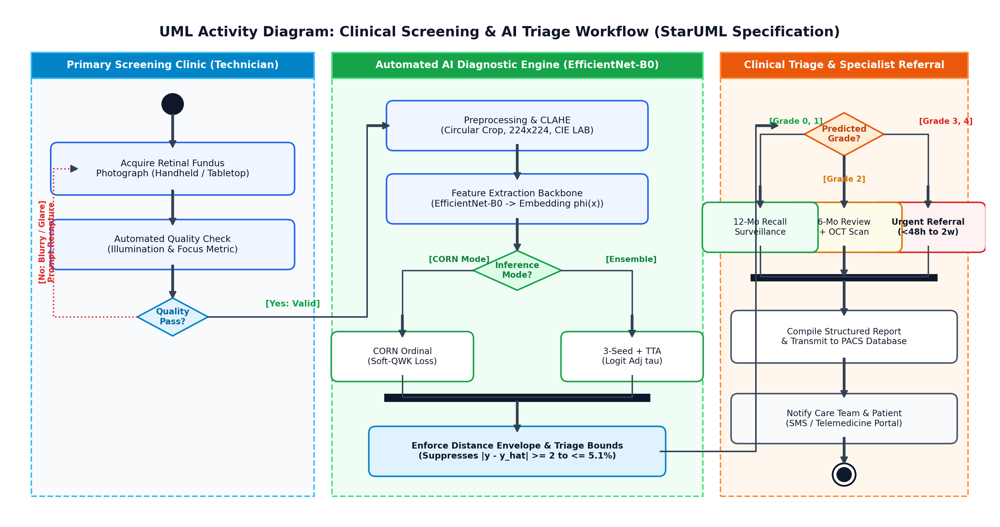
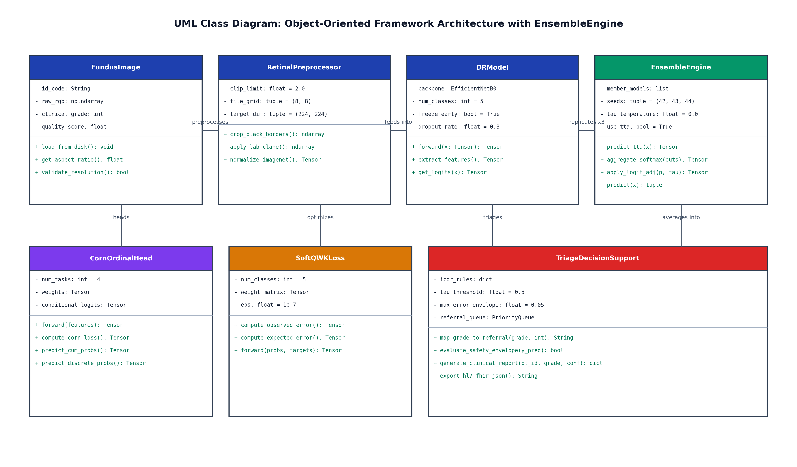

Ordinal Neural Networks for Diabetic Retinopathy Staging
Enforcing Monotonic Rank Consistency for Safety-Critical Clinical Decision Support
Problem Statement
Diabetic Retinopathy (DR) grading is a safety-critical classification task where standard neural network loss functions fail to capture the ordinal severity of the disease. The 5-point International Clinical Diabetic Retinopathy (ICDR) scale consists of: Grade 0 (No DR), Grade 1 (Mild NPDR), Grade 2 (Moderate NPDR), Grade 3 (Severe NPDR), and Grade 4 (Proliferative DR).
In a clinical setting, confusing vision-threatening Proliferative DR (Grade 4) with Severe NPDR (Grade 3) is a minor triage error, but confusing it with No DR (Grade 0) is a catastrophic failure that could result in irreversible blindness. However, standard categorical cross-entropy treats all these errors with the exact same numerical penalty.
Our objective is to implement and evaluate distance-aware, rank-consistent ordinal formulations on the APTOS 2019 Blindness Detection dataset (3,662 retinal images) using a lightweight EfficientNet-B0 backbone. We aim to strictly penalize catastrophic multi-grade misclassifications and ensure patient safety.

Fig 1: End-to-End System Architecture Diagram.
Trained Models & Methodology
We evaluated five distinct paradigms under strictly controlled, identical conditions on a mobile NVIDIA GeForce RTX 5050 GPU (allocating <540 MiB VRAM). All models share an identical 5.3M-parameter EfficientNet-B0 backbone. To prevent overfitting on low-level representations during specialized ordinal optimization, Variant D (CORN) freezes early convolutional blocks (stages 0–3, features[:4]). In contrast, Variants A, B, C, and E are fine-tuned end-to-end with all backbone layers unfrozen.
Variant A: Nominal Softmax Baseline
Trained using standard cross-entropy with all layers unfrozen. It optimizes independent nominal probabilities without any concept of rank. The loss gradient treats all non-target classes symmetrically.
Variant B: Consistent Rank Logits (CORAL)
Reformulates the 5-class ordinal problem into 4 binary classification subproblems. However, on highly imbalanced medical data, negative gradients from healthy retinas dominate the shared projection vector, crushing decision intervals for minority classes like Grade 3 Severe NPDR.
Variant C: Continuous Regression
Maps the embedding directly to a continuous scalar prediction trained with Smooth L1 Loss. At test time, the scalar is clipped and rounded. This method strictly penalizes large distance errors quadratically, yielding low multi-grade errors.
Variant D: Conditional Ordinal Regression for Neural Networks (CORN)
Instead of predicting unconditioned probabilities, CORN models the step-by-step conditional probability of exceeding rank k given that rank k−1 was reached. Stages 0–3 of the backbone are frozen to stabilize low-level edge features, and training incorporates effective-number class weighting and a WeightedRandomSampler.
We combine this with a Differentiable Soft-QWK Loss to align training directly with our target clinical metric (Quadratic Weighted Kappa):
Featured Model: Variant E (3-Seed Ensemble + TTA)
Designed for diagnostic telemedicine where overall classification accuracy and multi-seed stability are paramount. Three independent models are trained end-to-end (all layers unfrozen) across random seeds {42, 43, 44} with regularized label smoothing (α = 0.08) and safe-light geometric augmentations. At inference, predictions are averaged across models alongside 4-way flip Test-Time Augmentation (TTA), with post-hoc logit adjustment available for threshold calibration.
Outputs, Results & Comparison
All models were evaluated on a locked holdout test set of 550 images.
Key Findings
- Featured High-Accuracy Model (Variant E: 3-Seed Ensemble + TTA): Achieved the highest overall accuracy of 83.82% (vs. 83.45% for the best single seed), with QWK of 0.8859 and project-low MAE of 0.2200, reducing stochastic multi-seed variance (single-seed mean 82.73% → 83.82%) with a catastrophic error rate of 4.36%.
- Minority-Stage Protection (Variant D: CORN): Elevated Severe NPDR (Grade 3) sensitivity to 65.7% (compared to 0.0% in unweighted CORAL and 41.7% in Softmax baseline), achieving the lowest under-triage rate of 15.07%.
- Distance-Bounded Robustness (Variant C: Continuous Regression): Held catastrophic multi-grade triage errors (|y - ŷ| ≥ 2) to a study-lowest 3.8%.
- Clinical Triage Efficiency: Variant E (τ = 0.0) yields the lowest over-referral rate (2.52%), preventing clinic overburden, while post-hoc logit adjustment (τ = 1.0) balances under-triage down to 19.18%.

Fig 2: Side-by-Side Confusion Matrices comparing all five model variants on the locked holdout test set (N = 550).

Fig 3: Prediction Error Distance Distribution showing the elimination of severe off-by-3 and off-by-4 errors in Variant D and lowest MAE (0.2200) in Variant E.
Performance Comparison Table
| Model Variant / Configuration | QWK (Primary) | Accuracy (%) | MAE | Catastrophic Err (d ≥ 2) | Severe Recall (Grade 3) | Severe F1 (Grade 3) | PDR F1 (Grade 4) |
|---|---|---|---|---|---|---|---|
| Variant A: Softmax Baseline | 0.8724 | 80.18% | 0.2673 | 5.64% | 41.7% | 0.3810 | 0.5169 |
| Variant B: CORAL Ordinal | 0.7273 | 59.64% | 0.6964 | 26.40% | 0.0% | 0.0000 | 0.3692 |
| Variant C: Continuous Regression | 0.8788 | 75.64% | 0.2873 | 3.80% | 38.4% | 0.2528 | 0.3589 |
| Variant D (CORN): Conditional Ordinal | 0.8482 | 69.09% | 0.3764 | 5.10% | 65.7% | 0.2724 | 0.4584 |
| Variant E: 3-Seed Ensemble + TTA | 0.8859 | 83.82% | 0.2200 | 4.36% | 44.8% | 0.4561 | 0.5570 |
(Note: Bold indicates best value in each column. Quadratic Weighted Kappa (QWK) is the primary clinical ordinal metric. Variant E catastrophic error is 4.36%. While Variant E achieves the highest accuracy (83.82%) and lowest MAE (0.2200), its sensitivity gain on Grade 3 is modest (44.8%); Variant D achieves the highest Severe NPDR recall (65.7%) for high-sensitivity screening, and Variant C provides the lowest catastrophic error (3.8%).)
Clinical Referral Triage Performance (N = 550)
In tele-ophthalmology triage, sight-threatening DR (Grades 3–4, N = 73) requires urgent specialist referral, while Grades 0–2 (N = 477) receive routine monitoring. Under-triage represents true Grade 3–4 patients misclassified as Grade 0–2 (delayed specialist care), while over-referral represents true Grade 0–2 patients misclassified as Grade 3–4 (tertiary clinic overburden).
| Model Variant | Under-Triage Count | Under-Triage Rate (%) | Over-Referral Count | Over-Referral Rate (%) | Clinical Trade-off Profile |
|---|---|---|---|---|---|
| Variant A: Softmax Baseline | 21 / 73 | 28.77% | 27 / 477 | 5.66% | Unweighted multiclass baseline |
| Variant B: CORAL Ordinal | 8 / 73 | 10.96% | 96 / 477 | 20.13% | High false referrals from class collapse |
| Variant C: Continuous Regression | 23 / 73 | 31.51% | 30 / 477 | 6.29% | Conservative; bounds multi-grade drift |
| Variant D (CORN): Conditional Ordinal | 11 / 73 | 15.07% | 82 / 477 | 17.19% | High-sensitivity frontline screening |
| Variant E: 3-Seed Ens + TTA (τ = 0.0) | 22 / 73 | 30.14% | 12 / 477 | 2.52% | Minimum false alarms; confirmatory focus |
| Variant E: 3-Seed Ens + TTA (τ = 1.0) | 14 / 73 | 19.18% | 44 / 477 | 9.22% | Balanced trade-off via logit adjustment |
Comparison to Existing Work
Our lightweight EfficientNet-B0 backbone (5.3M parameters) demonstrated strong efficiency compared to prior multi-branch networks. For example, Shakibania et al. [2] (using ~30M parameters across ResNet-50 and EfficientNet-B0) reported 36.84% Severe NPDR recall (different dataset and task setting; not a head-to-head comparison). Our Variant D (CORN) attained 65.7% Severe NPDR recall on the APTOS 2019 benchmark with over 80% fewer parameters, while Variant E reached 83.82% overall accuracy.
Conclusions
Our empirical findings establish four core conclusions:
- Featured High-Accuracy Ensemble: Variant E: 3-Seed Ensemble + TTA achieved the study's highest classification accuracy (83.82%), lowest MAE (0.2200), and QWK 0.8859, stabilizing stochastic initialization variance across seeds with a low catastrophic error rate of 4.36% and the lowest over-referral rate (2.52%).
- Minority-Class Protection: Conditional ordinal regression (CORN) effectively resolved the breakdown of unweighted CORAL on minority classes, elevating Severe NPDR sensitivity to 65.7% and reducing under-triage to 15.07%.
- Distance-Aware Error Bounding: Continuous Regression (Variant C) tightly bounded multi-grade errors, achieving the study's lowest catastrophic error rate of 3.8%.
- Hardware & Deployment Efficiency: By prioritizing loss formulation and multi-seed stability over parameter bloat, high clinical utility is achievable on a standard 5.3M-parameter backbone on consumer laptop hardware under 1 GB VRAM.

Fig 4: UML Activity Diagram for Clinical Screening and AI Triage Workflow.

Fig 5: UML Class Diagram specifying Object-Oriented Software Architecture with EnsembleEngine.
Areas to Improve / Future Scope
Building upon these findings, future research will explore the following directions:
- Multimodal Vision-Language Explanations: Integrate our conditional ordinal backbone with lightweight vision-language models (e.g., BiomedCLIP) to generate clinician-facing natural language rationales alongside calibrated stage predictions.
- Multi-Center Clinical Validation: Evaluate cross-cohort generalization across international datasets (Messidor-2, DDR, EyePACS) to test resilience against diverse demographic populations and varied camera hardware.
- Edge Deployment on Handheld Fundus Cameras: Quantize the EfficientNet-B0 CORN model to INT8 precision using TensorRT for embedded execution directly on portable, battery-powered fundus cameras for rural screening camps.
Download Research Paper
Get the full compiled IEEE-format research paper, complete with OMML mathematical typesetting.